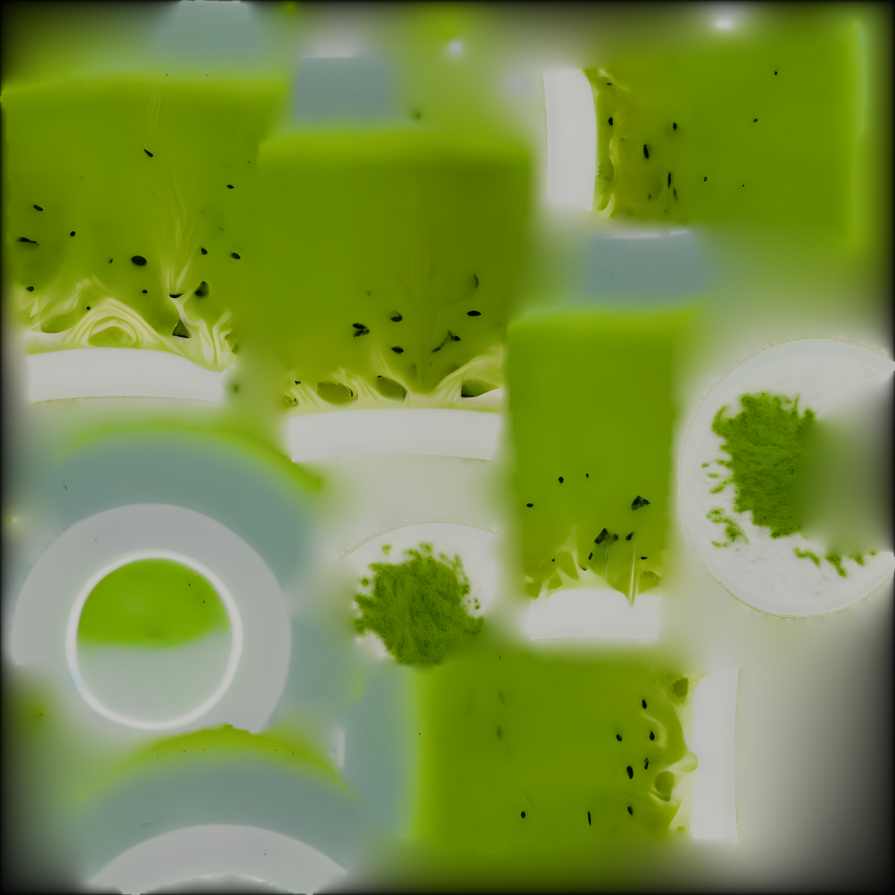

FIRST HARVEST UJI • KYOTO
Craft
Your
Ritual
Pure ceremonial Tencha from Kyoto, stone-ground to 5 microns. Layer botanical notes, explode the structure, and experience sustained zen focus.
GLOBAL TEA AWARDS
PREMIUM BOTANICAL SODA 2025
Layer 1 • Topping
Matcha Foam & Dust
Silky ceremonial foam rich in umami aroma, dusted with fine matcha micro-powder.
Layer 2 • Isi / Infusion
First-Harvest Uji Extract
Cold-brewed first-harvest Tencha tea leaves from Kyoto with zero sugar.
Layer 3 • Base Foundation
Zen Mineral Soda Base
Artisan mountain spring mineral base infused with crisp, revitalizing micro-bubbles.

Ceremonial Uji
$3.49
Matcha Yuzu
$3.49